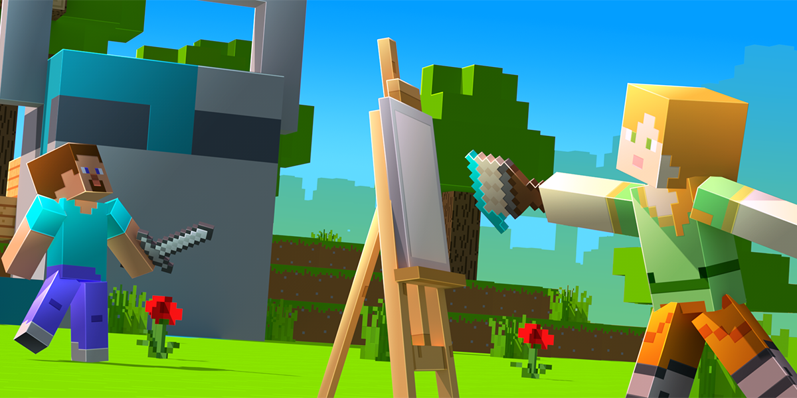

Minecraft розвинула низку ідей браузерної гри Infiniminer, зокрема графіку. Початково написана на Java шведським програмістом Маркусом Перссоном («Notch»), Minecraft надалі розвивається його компанією Mojang, заснованою за рахунок прибутків від гри. Альфа-версія була випущена 17 травня 2009,, бета-версія — 20 грудня 2010. Офіційні випуски гри для iOS, Android і повна версія для ПК були представлені 18 листопада 2011 на конференції фанатів MineCon 2011, яка відбулася в Лас-Вегасі.
